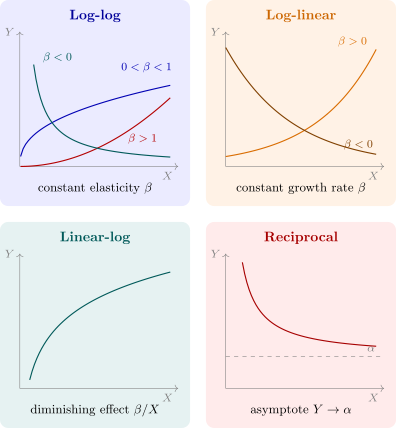

3.3 Transformations of the variables
Three further transformations recur throughout applied economics. Each makes the model linear in its parameters, and each implies a different relation between \(X\) and \(Y\). The key to using them is to know what the slope coefficient means in each case.
Definition 3.3.1. For a relation \(Y = f(X)\), the marginal effect is \(dY/dX\), the elasticity is \(\eta = \dfrac {dY}{dX}\dfrac {X}{Y}\), the percentage change in \(Y\) per \(1\%\) change in \(X\), and the semi-elasticity is \(\dfrac {1}{Y}\dfrac {dY}{dX}\), the proportional change in \(Y\) per unit change in \(X\).
Theorem 3.3.2. For the deterministic part of each model, the marginal effect and the elasticity are:
| Model | Equation | \(dY/dX\) | Elasticity \(\eta \) |
| Linear | \(Y = \alpha + \beta X\) | \(\beta \) | \(\beta X/Y\) |
| Log-log | \(\log Y = \alpha + \beta \log X\) | \(\beta Y/X\) | \(\beta \) |
| Log-linear | \(\log Y = \alpha + \beta X\) | \(\beta Y\) | \(\beta X\) |
| Linear-log | \(Y = \alpha + \beta \log X\) | \(\beta /X\) | \(\beta /Y\) |
| Reciprocal | \(Y = \alpha + \beta /X\) | \(-\beta /X^2\) | \(-\beta /(XY)\) |
Proof. Each follows by differentiation and the identity \(\eta = \dfrac {d\log Y}{d\log X}\), which holds because \(d\log Y = dY/Y\) and \(d\log X = dX/X\).
- Log-log: \(\eta = d\log Y/d\log X = \beta \) directly, and \(dY/dX = \eta Y/X\).
- Log-linear: \(d\log Y/dX = \beta \), so \(dY/dX = \beta Y\), and \(\eta = \beta X\).
- Linear-log: \(dY/dX = \beta \, d\log X/dX = \beta /X\), and \(\eta = (\beta /X)(X/Y) = \beta /Y\).
- Reciprocal: \(dY/dX = -\beta /X^2\), and \(\eta = -\beta /(XY)\). □
Log-log: constant elasticity
The log-log model is \(Y = AX^{\beta }e^{u}\), the form of the Cobb–Douglas function of Example 1.1.4 and of most estimated demand functions. Its single attraction is that the elasticity is the same at every point and is read directly from the coefficient. That is also its restriction: a demand curve along which the price elasticity is constant cannot become more elastic as price rises.
Log-linear: growth and returns
When \(\log Y = \alpha + \beta X + u\), a unit increase in \(X\) multiplies \(Y\) by \(e^{\beta }\), so the exact percentage effect is \(100(e^{\beta } - 1)\). The approximation \(100\beta \) is good for \(|\beta | < 0.1\) and poor beyond it. The constant growth curve is the case \(X = t\). A second leading case is the wage equation \(\log w = \alpha + \beta S + u\) of Example 1.1.5, where \(\beta \) is the return to schooling: \(\beta = 0.08\) means each year of schooling is associated with wages \(100(e^{0.08} - 1) = 8.3\%\) higher.
Linear-log: diminishing effects
When \(Y = \alpha + \beta \log X + u\), a \(1\%\) rise in \(X\) changes \(Y\) by about \(\beta /100\) units, whatever the level of \(X\). Each successive kwacha of \(X\) has a smaller effect, since \(dY/dX = \beta /X\). This is Working’s form of the Engel curve, in which the budget share of food falls linearly in the logarithm of income.
Reciprocal: an asymptote
In \(Y = \alpha + \beta /X\), as \(X \to \infty \), \(Y \to \alpha \). The curve approaches a floor or a ceiling, such as the average cost curve approaching marginal cost, or the original Phillips curve, in which wage inflation falls towards a lower limit as unemployment rises.

Questions on this section
Stuck on something here? Ask below and it stays attached to this topic.